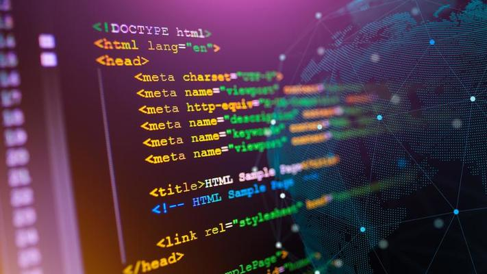
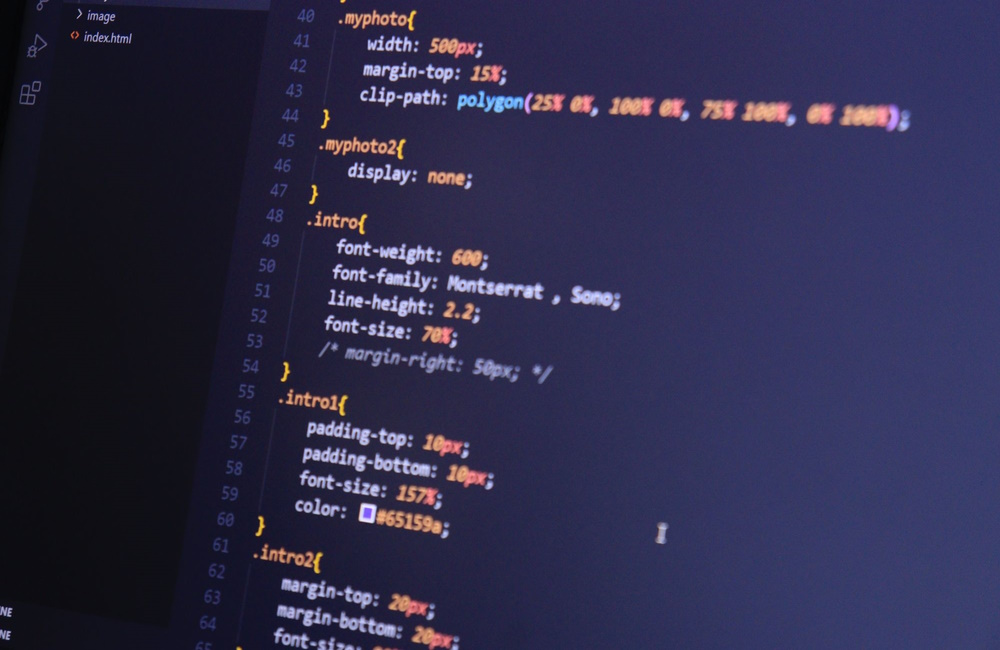
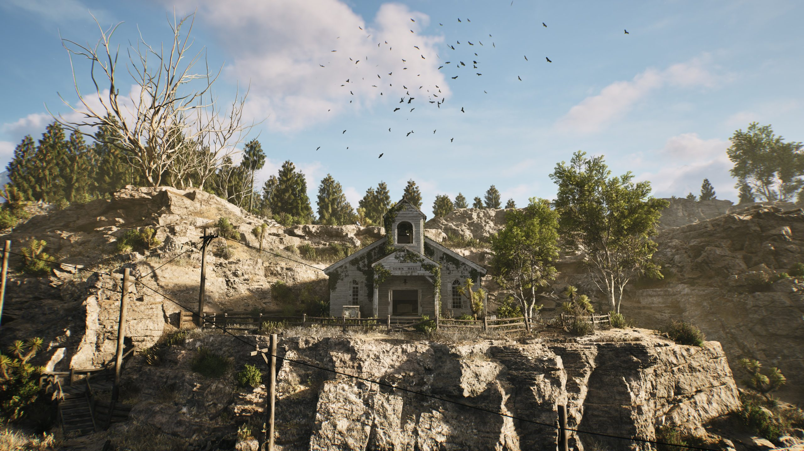
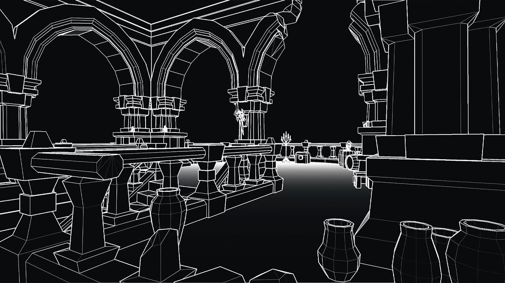

Sobre Mí

¡Hola! Soy Oscar Paz, un desarrollador web y programador. Desde muy joven, me he sentido atraído por la tecnología y el arte digital, lo que me llevó a combinar estas dos pasiones en mi carrera profesional.
Mi experiencia abarca desde la creación de sitios web dinámicos y atractivos hasta el desarrollo de complejos sistemas de gráficos, donde puedo dar vida a ideas y conceptos visuales a través del código. Me dedico a aprender continuamente nuevas tecnologías y técnicas para mejorar mis habilidades y ofrecer soluciones innovadoras y eficientes.
Poseo conocimiento de HTML, CSS y JavaScript, lo que me permite construir sitios web modernos y responsivos con interfaces de usuario intuitivas y experiencias de usuario optimizadas. Mi habilidad para manejar estos lenguajes me permite abordar una amplia variedad de proyectos, desde el desarrollo front-end hasta la programación de software más complejo.
Mi objetivo es utilizar la tecnología para crear experiencias digitales impactantes que no solo sean funcionales, sino también visualmente impresionantes.
 